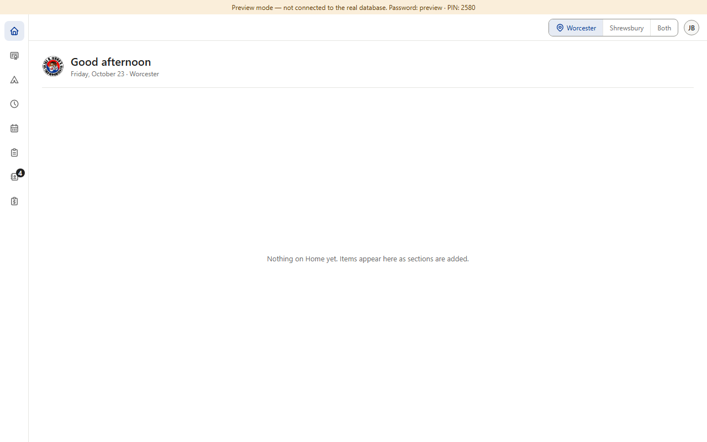
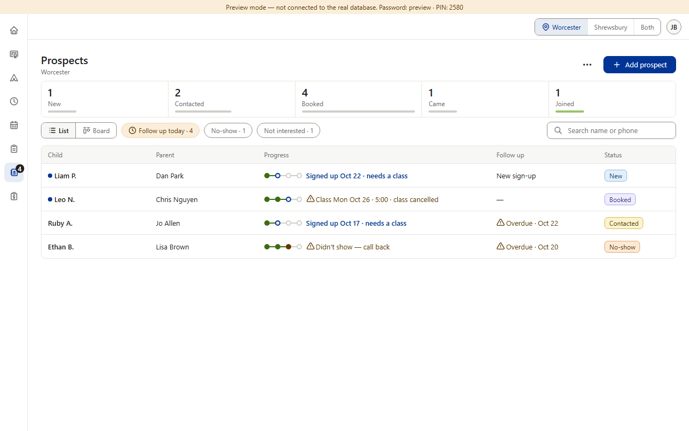
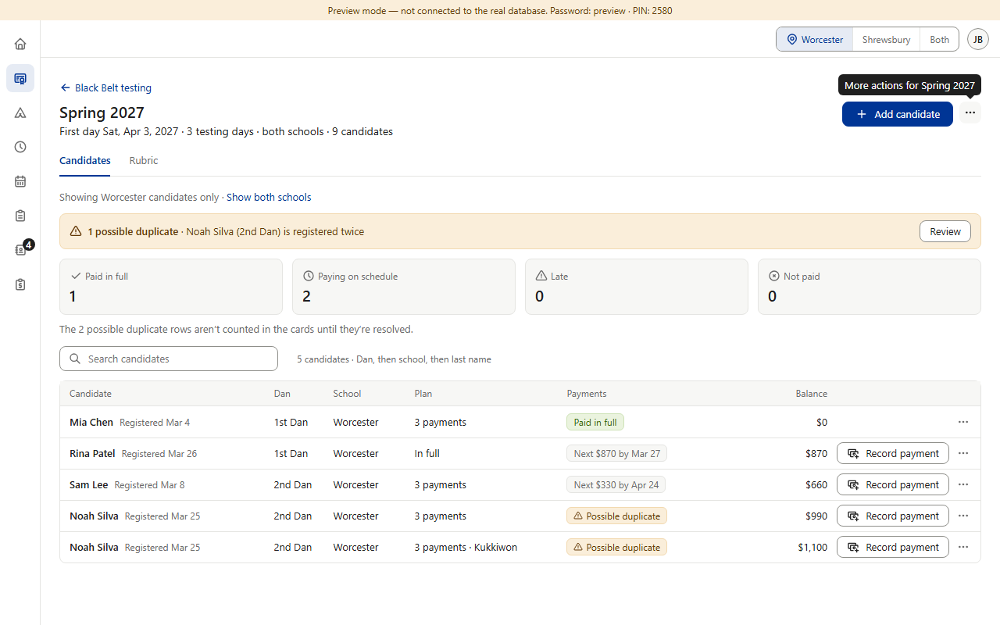
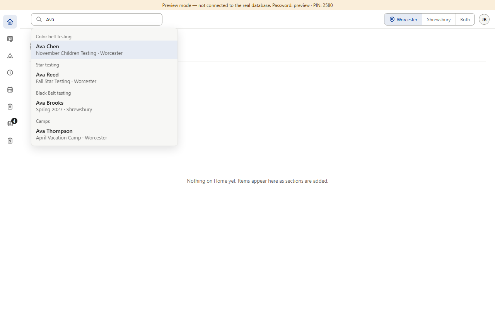

Today




Each box searches only its own list. Color Belt's and Star's rosters have none. To find a family today you must first know which section they are in.
Proposed (option B) · one people search in the top bar

Scope for Main: people only, across Color Belt, Star, Black Belt, Camps and Prospects (Prospects keep “Ava R.”); nothing private in the results, so Hide private details has nothing to hide; the in-list boxes stay for narrowing their own list. Picture 5 is drawn over the real page with sample people from the preview's fake data; nothing in the app was changed.